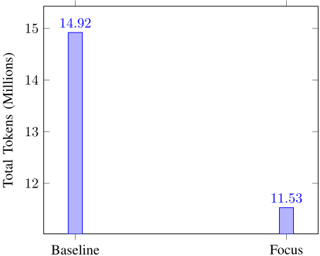
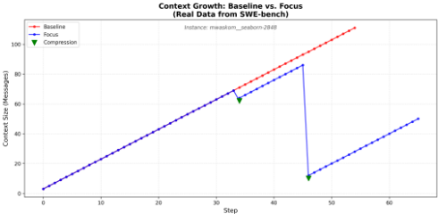

主动上下文压缩：LLM Agent 中的自主记忆管理
LLM Agent 在长程软件工程任务中因 'Context Bloat' 导致 token 成本激增、延迟上升，且无关的过往错误干扰推理，而现有外部摘要机制是被动的、Agent 无法自主控制。论文提出 Focus 架构，在标准 ReAct 循环中加入 start_focus 与 complete_focus 两个工具原语，让 Agent 自主决定何时把关键学习固化到持久 Knowledge 块并物理删除原始交互历史，使上下文从单调递增变为'锯齿状'增长-收缩模式。在 SWE-bench Lite 的 5 个上下文密集实例上用 Claude Haiku 4.5 做 A/B 对比，配合'每 10-15 次工具调用压缩一次'的强指令提示与系统提醒，Focus 实现 22.7% token 节省（14.9M→11.5M）且准确率与 Baseline 完全相同（均 3/5）。关键结论是：压缩的时机与频率比是否压缩更重要，当前模型缺乏内在成本意识，必须靠提示脚手架把压缩变成工作流的一等公民；但压缩并非普遍有益，迭代精炼型任务可能因过度修剪而反增成本。
LLM Agent 在长程软件工程任务中面临 'Context Bloat'：标准 Agent 以 'Append-Only' 模式运行，每个思考、工具调用和系统响应都永久追加到对话历史，导致计算成本爆炸、延迟上升，且被无关的过往错误干扰推理；现有方案多为 Agent 无法控制的被动外部摘要机制。
提出 Focus Agent 架构：在标准 ReAct 循环中引入 start_focus 与 complete_focus 两个原语，Agent 全权自主决定何时调用（无外部定时器或启发式强制）；压缩时将近期轨迹总结为高层学习写入持久 Knowledge 块，并从上下文中删除原始日志，使上下文呈'锯齿状'模式。设计灵感来自黏菌 Physarum polycephalum 的探索-回缩策略。实验采用符合 Anthropic 最佳实践的最小两工具脚手架（持久 bash + 字符串替换编辑器，最大 150 步），并通过'每 10-15 次工具调用压缩一次'的强指令提示与系统注入提醒实现激进压缩。
SWE-bench Lite 5 个上下文密集实例（Claude Haiku 4.5，A/B 对比）：Focus 实现 22.7% 总 token 节省（14.9M → 11.5M），准确率与 Baseline 完全相同（均为 3/5 = 60%）
平均每任务 6.0 次自主压缩（被动提示下仅 2.0 次），每任务平均丢弃 70.2 条消息；单实例节省最高 57%
4/5 实例实现 18%-57% 节省：matplotlib-26020 为 -57%（4.0M→1.7M）、seaborn-2848 为 -52%（3.4M→1.6M）、sympy-21171 为 -57%（1.6M→0.7M）
反例：pylint-7080 上 Focus 多耗 110% token（4.3M vs 2.1M，136 vs 63 次 LLM 调用），但两个 Agent 均通过测试套件
被动提示下仅 6% 节省且出现准确率退化（60% vs 80%）；激进提示（每 10-15 次调用压缩 + 系统提醒）消除了准确率损失
区别于 MemGPT 的操作系统式外部虚拟内存、Voyager 的技能库、Reflexion 的任务间反思（between task attempts）以及 LLMLingua 依赖独立压缩模型的方案，Focus 实现'轨迹内压缩'（intra-trajectory compression）：Agent 在单个任务执行过程中主动修剪自身历史，把学习保留在结构化 Knowledge 块中；压缩时机完全由模型自主决定，无需外部定时器、启发式或额外压缩模型，且纯对话内实现、无需基础设施改造，是对外部记忆方法的补充而非替代。
相关度级别：high
命中能力域：3.1 上下文工程与记忆 | 3.2 提示工程 | 3.3 Agent 架构与工具使用 | 3.5 评测与可靠使用
理由：论文直接命中 3.1 的核心技术：Agent 场景下的上下文窗口管理与压缩、记忆固化（Knowledge 块）与生产系统中的上下文管理；其核心发现之一是提示策略决定压缩成败（'每 10-15 次调用压缩一次'的指令与系统提醒），对应 3.2 的提示设计与模式；架构上通过向 ReAct 循环注入两个工具原语实现，属于 3.3 的 Agent loop/harness 与工具调用设计；同时在 SWE-bench 上做了成本-准确率权衡的对照实证，契合 3.5 的成本与效率优化及 AI 辅助工程实证研究。对构建代码生成/审查 Agent 与长程自动化流程的团队，这是一篇方法可直接复用、且明确给出失败边界（pylint-7080 反例）的工程实证。
建议动作：深入精读并做内部分享
arXiv:2601.07190v1 [cs.AI] 12 Jan 2026
“上下文窗口”仍然是自主 AI 智能体的根本瓶颈。尽管近期的模型提供了海量的上下文容量（例如 200k+ token），但若简单地利用这一容量，则会面临三个关键挑战：
记忆增强智能体。若干方法通过外部记忆来应对上下文限制。MemGPT [2] 实现了一种受操作系统启发的虚拟内存层次结构，允许大语言模型（LLM）通过显式的读/写操作来管理自身记忆。Voyager [3] 使用技能库来存储可复用的代码片段，从而减少冗余探索。
反思与自我改进。Reflexion [4] 使智能体能够从失败中学习，其做法是生成文本形式的反思并将其存储在情景记忆缓冲区中。然而，该机制是在多次任务尝试之间运作，而非在单条连续轨迹内部运作。LATS [5] 将树搜索与 LLM 推理相结合，但仍会累积完整轨迹。
上下文压缩。StreamingLLM [6] 通过注意力汇聚（attention sink）token 来应对无限上下文问题，但其运作于注意力层面，并未提供智能体级的记忆管理。LLMLingua [7] 可对提示进行压缩，但需要一个独立的压缩模型。
我们的贡献。与先前工作不同，Focus 实现了轨迹内压缩（intratrajectory compression）——智能体在单个任务期间主动修剪自身历史，并将学得的经验保存在一个结构化知识块中。这是对外部记忆方法的补充，而非替代。
标准智能体以“仅追加”（Append-Only）模式运行：每一个思考、每一次工具调用以及每一条系统响应都会被永久添加到对话历史中。这一策略对短任务有效，但对于复杂、开放式的探索则注定失败，因为智能体不可避免地会触及 token 上限，或因自身先前的失败而陷入混乱。
我们提出从被动保留（Passive Retention）向主动压缩（Active Compression）的转变。受多头绒泡菌（Physarum polycephalum）的高效性启发——这种黏菌在探索环境时会从死路中物理性地回缩，同时留下化学标记以避免重复探索——我们引入了 Focus Agent。该智能体具备内省能力，能够将近期轨迹总结为高层次的学得经验，并将该轨迹的原始日志从其直接上下文中物理删除。
生物系统不会保留穿越迷宫时每一次肌肉运动的完美记录；它们保留的是学得的地图。同样，一个正在探索代码库的智能体不需要记住十分钟前的 50 行 ls -R 输出；它只需要记住“配置文件不在 /src 目录中”。
Focus 架构在标准 ReAct 智能体循环中引入了两个原语：start_focus 和 complete_focus。至关重要的是，智能体对何时调用这些工具拥有完全的自主权——没有任何外部定时器或启发式规则强制执行压缩。
这将上下文从单调递增的日志转变为一种“锯齿”（Sawtooth）模式，其中上下文在探索过程中增长，在整合过程中坍缩。模型基于任务结构而非任意步数来控制这一循环。
我们在 SWE-bench Lite 上评估了 Focus 架构，SWE-bench Lite 是一个面向解决真实 GitHub 问题的软件工程智能体的基准测试（benchmark）。我们使用 claude-haiku-4-5-20251001 在 N=5 个上下文密集型实例上进行了受控 A/B 对比，在相同任务上同时运行 Baseline 智能体和 Focus 智能体。任务成功与否通过官方 SWE-bench Docker 评测框架进行验证，该框架在隔离容器中应用补丁并运行原始测试套件。
遵循 Anthropic 公布的 SWEbench 最佳实践 [8]，我们实现了一个最小化的双工具脚手架（scaffold）：
系统提示词（system prompt）指示智能体“尽可能多地使用工具，理想情况下超过 100 次”，并“在尝试解决问题之前先实现你自己的测试”。最大步数（Maximum steps）设置为 150。
初始实验表明，被动的 Focus 提示在每个任务中仅产生 1-2 次压缩，且 token 节省微乎其微（6%）。我们将 Focus 提示修改得更具指令性：
实例：我们选取了五个具有复杂问题陈述的上下文密集型实例：matplotlib__matplotlib-26020、mwaskom__seaborn-2848、pytest-dev__pytest-7490 和 sympy__sympy-21171。这些实例是基于问题陈述长度（作为探索复杂度的代理指标）和历史难度选出的。
指标：我们跟踪了（1）任务成功与否（补丁是否通过 Docker 中的测试）、（2）总 token 消耗、（3）压缩事件数与被丢弃的消息数，以及（4）各实例的效率模式。
| Metric | Baseline | Focus (Ours) | Delta |
|---|---|---|---|
| Task Success (Tests Pass) | 3/5 (60%) | 3/5 (60%) | Same |
| Total Tokens | 14,920,555 | 11,526,418 | -22.7% |
| Avg Tokens/Task | 2,984,111 | 2,305,284 | -678K |
| Avg Compressions | 0 | 6.0 | - |
| Avg Messages Dropped | 0 | 70.2 | - |
| Metric | Baseline | Focus (Ours) | Delta |
| Instance | Base | Focus | Tokens | Compr. |
|---|---|---|---|---|
| matplotlib-26020 seaborn-2848 pylint-7080 pytest-7490 | ✓ ✓ | ✓ × ✓ ✓ | -57% -52% -18% | 5 |
| × | 7 | |||
| +110% | 8 | |||
| ✓ | 6 | |||
| sympy-21171 | × | × | -57% | 4 |
| Instance | Base | Focus | Tokens | Compr. |
发现 1：在不损失准确率的情况下减少 Token。Focus 实现了 22.7% 的总 Token 缩减（14.9M → 11.5M），同时保持与 Baseline 完全相同的准确率（两者均为 3/5 = 60%）。这与我们早期实验中被动提示出现准确率下降的结果相矛盾。关键区别在于：强制执行频繁且结构化压缩（每任务 6.0 次，而此前为 2.0 次）的激进提示，可防止上下文被过时的探索日志污染。
发现 2：在 4/5 个实例上取得一致的节省。Focus 在 5 个实例中的 4 个上减少了 Token 用量，节省幅度从 18% 到 57% 不等。最显著的节省出现在需要大量探索的实例上：matplotlib-26020（-57%，4.0M → 1.7M）、seaborn-2848（-52%，3.4M → 1.6M）以及 sympy-21171（-57%，1.6M → 0.7M）。只有 pylint-7080 显示用量增加（+110%），其中 Focus 的额外探索（136 次对比 63 次 LLM 调用）超过了压缩带来的收益——但两个 Agent 都通过了测试套件。
发现 3：激进提示使频繁压缩成为可能。通过明确指示每 1015 次工具调用进行一次压缩，并辅以周期性的系统提醒，Focus 平均每任务执行 6.0 次压缩（而被动提示下为 2.0 次），每任务丢弃 70.2 条消息。Claude Haiku 4.5 遵循了结构化工作流（探索 → 压缩 → 实现 → 压缩 → 验证），这表明 LLM 可以被引导以激进地自我调节其上下文。
Token 消耗（Haiku 4.5，N=5 个困难实例）

在 matplotlib-26020 上，两个 Agent 均通过了测试套件，但 Focus 实现了 57% 的 token 节省（4.0M → 1.7M）。Focus 在 71 次 LLM 调用中执行了 5 次压缩，而 Baseline 使用了 102 次调用且未进行压缩。节省来源于 Focus 高效地总结了其探索阶段——一旦定位到相关文件并理解了该 bug，它便压缩该上下文并直接进入实现阶段。这展示了理想情形：在探索过程中频繁进行压缩，既保留了所学到的信息，又丢弃了冗长的工具输出。
F. 案例研究：压缩带来额外开销的情形（pylint7080）
在 pylint-7080 上，Focus 使用的 token 比 Baseline 多 110%（4.3M 对 2.1M），但两个 Agent 均通过了测试套件。
分析显示，Focus 进行了 136 次 LLM 调用，而 Baseline 为 63 次，其中 8 次压缩丢弃了 80 条消息。该问题需要大量的试错，而 Focus 的压缩偶尔会丢弃有用的上下文，迫使其重新探索。这一案例表明，压缩并非在所有情况下都有益：需要迭代式改进的任务可能会因激进的上下文剪枝而受损。

激进提示消除了准确率权衡：我们早期采用被动式 Focus 提示的实验显示准确率下降（60% 对 80%）。在激进提示强制执行结构化、频繁压缩的情况下，Focus 的准确率与 Baseline 持平（60% = 60%），同时实现了 22.7% 的 token 节省。关键洞察在于：何时压缩以及压缩的频率，比是否压缩更为重要。频繁的小规模压缩（每 10-15 次调用进行一次）在丢弃过时探索日志的同时保留了近期上下文，而不频繁的大规模压缩则有丢失关键实现细节的风险。
探索密集型任务受益最大：token 节省量与探索复杂度相关。需要大量代码库导航的实例（matplotlib、sympy）显示出 50-57% 的节省，因为 Focus 高效地压缩了冗长的目录列表、文件内容和失败的尝试。相反，pylint-7080 需要迭代式改进，其先前上下文始终保持相关，导致压缩开销超过了收益。这表明，Focus 最适用于具有明确探索/实现阶段划分的任务，而非需要持续状态累积的任务。
提示策略至关重要：要实现 22.7% 的节省，需要明确的提示（“每 10-15 次工具调用压缩一次”）以及系统注入的提醒。如果没有这些措施，Claude Haiku 4.5 每个任务仅压缩 2.0 次，节省率仅为 6%。这表明，当前的 LLM 并不会自然地针对上下文效率进行优化——它们需要脚手架来使压缩成为工作流中的一等组成部分。未来的工作可以探索通过微调或强化学习将压缩启发式策略内化。
主动压缩引入了一种“认知税”——即生成摘要所花费的 token，以及管理专注阶段所带来的开销。尽管存在这一税负，Focus 在我们的所有实验中仍实现了 22.7% 的净 token 节省。这种税负会在任务生命周期内被摊销：每次压缩需花费数百个 token，但由于无需重新处理过时的历史记录，可节省数千个 token。对于包含 50 次以上工具调用的任务（在 SWE-bench 中很常见），这种摊销效应使得压缩明显更具优势。
我们的结果依赖于激进的提示（prompting）手段（“每 10-15 次调用压缩一次”、系统提醒）。这引出了一个问题：大语言模型（LLM）能否在没有显式指令的情况下学会最优地进行压缩？当前的模型似乎缺乏内在的成本意识——它们并不会自然而然地针对 token 效率进行优化。未来的工作可以探索：（1）在带压缩标注的轨迹上进行微调，（2）采用带 token 成本惩罚的强化学习，或者（3）嵌入效率偏好的宪法式 AI（Constitutional AI）方法。
我们已经证明，激进的、由模型控制的上下文压缩可以在不牺牲任务准确率的情况下实现显著的 token 节省：
明确的压缩指令（每 10-15 次工具调用压缩一次）结合系统提醒，将每个任务的压缩次数从 2.0 次提升到 6.0 次，并实现了 22.7% 的节省。当前的 LLM 需要脚手架（scaffolding）才能针对上下文效率进行优化。
Focus 架构提供了一种实用的、无需基础设施的上下文管理方法，该方法完全在对话内部运行。结合经过优化的脚手架（持久化 bash、字符串替换编辑），它为迈向成本感知的智能体系统提供了一条可行路径。随着上下文窗口的不断扩大和智能体任务的日益复杂，主动压缩对于管理自回归推理中固有的二次方成本增长将变得越来越有价值。
未来工作：(1) 在完整 SWE-bench（N=300）上进行验证，以刻画任务类型依赖性；(2) 采用微调或强化学习（RL）方法，在无需显式提示的情况下内化压缩启发式规则；(3) 结构化压缩，保留特定产物（测试输出、diff）而非自由文本摘要；(4) 跨模型评估（GPT-4、Gemini、开源模型），以评估泛化能力。
1 条证据未在原文中核对到